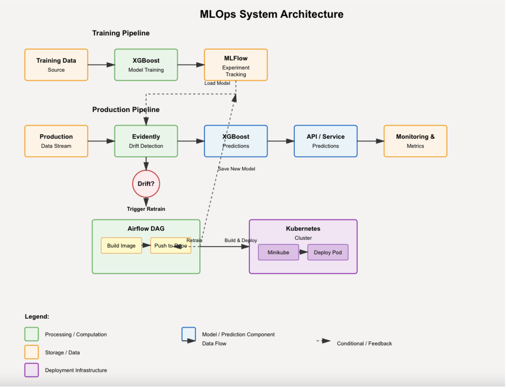

End to end MLOPS: MEDIWATCH
Demonstrating end-to-end MLOPS including training, production deployment and model management

1. Introduction
What does it take to create a realistic system that demonstrates the entire ML life cycle, all the way from the notebook to production? How will you monitor the model in the field for data and model drift? This project answers those questions.
2. Problem Statement
Starting with a well known dataset (Medi-watch), This project aims to
Create a model that can predict 30 day return to ER for patients
Provide a training pipeline to build the model
As part of the build pipeline, deploy the model into kubernetes for production
Create an interactive front end that a health professional can use to estimate the probability of 30 day return for an individual patient
Monitor all experiments (for example training and builds)
Monitor for data and model drift and provide a DAG to trigger a redeployment if needed
3. Solution
Perform EDA on the data
Create the model and convert the notebook into a proper python class
Create a set of FastAPI endpoints to interact with the model
Create a UI frontend for the end user
Use Ray-Tune for hyperparameter optimization
Generate a Docker image for the entire project
Deploy the docker image to kubernetes (minikube)
Monitor data drift with Evidently
Use airflow DAG to manage DAGS for build processes
Use MLFLOW to monitor all experiments